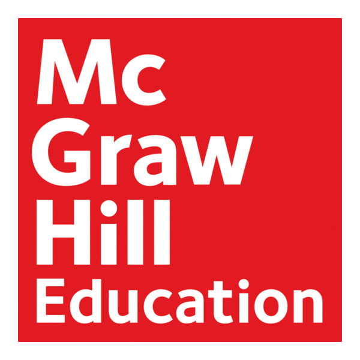

BIO 152 Principles of Biology II
InstructorJustin N. Howard
OfficeSomerset North Campus · Stoner Bldg · Rm 216
Phone606-451-6993
Emailjustin.howard@kctcs.edu
ContactBlackboard Messages is the primary communication method. MS Teams, phone, or in-person meetings are welcome when needed.
Course Contacts
Associate Dean
April Kilgore, Ph.D.
- Somerset North Campus · Stoner Bldg · Rm 210
- Laurel North Campus · Bldg 2 · Rm 107
- M-F 9:30 am-3:30 pm; appointments available as needed.
- 606-878-4755
- april.kilgore@kctcs.edu
Administrative Assistant
Tammy Woodall
- Somerset North Campus · Stoner Bldg · Rm 222
- Available during regular office hours for department and course-related assistance.
- 606-451-6704
- tammy.woodall@kctcs.edu
Dean
John Burlew
- Somerset Campus North · Stoner Bldg · Rm 210
- M-F 8:00 am-4:30 pm; appointments available as needed.
- 606-451-6748
- jon.burlew@kctcs.edu
Course Description
BIO 152 Principles of Biology II presents knowledge of organismal, population, and community biology. It is part two of the BIO 150 and BIO 152 two-semester sequence.
This course includes evolution, biological diversity, plant and animal biology, behavior, population ecology, community ecology, and ecosystem dynamics.
Required Course Materials
All course materials for this course are delivered through Blackboard, McGraw Hill, and Connect®. These systems work together throughout the semester and are illustrated below.
Blackboard serves as the primary course portal. You should begin course activities in Blackboard, where you will access announcements, course information, assignment links, exams, grades, and instructor communication.
McGraw Hill is the publisher of your course textbook and provides digital learning resources used throughout the semester.
Connect® is McGraw Hill's online learning platform. In this course, Connect is used for SmartBook assignments, quantitative literacy assignments, data practice, and access to the electronic textbook. Course exams are accessed through Blackboard.

Your primary course hub for communication, content, exams, and updates.

Textbook and learning resources to support your success.

Complete assigned SmartBook and data activities in Connect.
Additional tools and support available to you.
Course Outline and Workload
You should expect to spend approximately 6-8 hours most weeks reading, studying, and completing assignments for this class. Some exam weeks may require additional study time. Because this is an accelerated 8-week online course, students should plan to work consistently throughout the week and check Blackboard and KCTCS email daily.
It is recommended that you complete weekly work in the following order:
- Review the module overview, weekly checklist, and due dates in Blackboard.
- Read or review the assigned chapter materials and electronic textbook resources.
- Complete the assigned SmartBook work in Connect.
- Complete any assigned quantitative literacy or data activity.
- Study and review before completing an exam when one is scheduled.
- Complete course exams through Blackboard by the posted deadline.
- Check Blackboard grades, feedback, announcements, and messages regularly.
Course Point Summary
| Category | Number | Points | Total |
|---|---|---|---|
| Start Here Assignments | 4 | Varies | 27 |
| Interactive SmartBook Exercises | 13 | 30 | 390 |
| Quantitative Literacy / Data Assignments | 3 | Varies | 33 |
| Check Quizzes | 4 | 5 | 20 |
| Module Exams | 4 | 60 | 240 |
| Total | 28 | — | 710 |
Start Here Assignments
These assignments are used as evidence of attendance during the first week of class. Because this is an accelerated 8-week online course, students must complete the first Start Here assignments early in the semester to remain enrolled and to gain access to the rest of the course.
Due Thursday, June 18, 2026 at 11:59 p.m. ET
- Online Learning Survey - 5 pts
- Syllabus Quiz - 7 pts
- Discussion Board: Let's get to know each other! - 5 pts
- 1st Lab - Virtual Labs Tutorial - 10 pts
Purpose of Start Here
- Confirm that you can access Blackboard and course tools.
- Review key course policies before regular weekly work begins.
- Introduce yourself to the class through the discussion board.
- Practice opening and completing a Connect-style activity.
Description of Each Start Here Assignment
- Online Learning Survey (5 pts) - This true/false survey helps you evaluate whether you are prepared for an accelerated online biology course. BIO 152 requires regular weekly work and a realistic time commitment of approximately 6-8 hours most weeks, with additional study time during exam weeks if needed.
- Syllabus Quiz (7 pts) - This quiz ensures that you are familiar with important class policies before beginning regular course work. It should focus on BIO 152-specific policies, including Blackboard as the starting point, Connect access, the two-day extension policy, exam expectations, course materials, and the weekly module schedule.
- Discussion Board: Let's get to know each other! (5 pts) - This discussion board assignment allows us to get to know each other and gives you a chance to connect with classmates. You may use this as an opportunity to form an online or in-person study group.
- 1st Lab - Virtual Labs Tutorial (10 pts) - This short tutorial gives you practice opening and completing an online activity through the course tools. The average completion time is about 7 minutes 45 seconds, with a typical range of 4-9 minutes. This item does not include a late submission period.
Assignments
SmartBook Assignments
SmartBook assignments guide you through important concepts from the assigned chapters. These assignments may be repeated before the due date, and they are intended to help you read actively and prepare for exams.
Quantitative Literacy and Data Assignments
Quantitative literacy work asks you to read graphs, interpret data, and connect biological concepts to evidence. These assignments support course themes such as evolution, phylogeny, and changes in life through time. Plan for about 45-60 minutes for each quantitative literacy or data assignment.
Exams
Four exams are assigned during the course. Each exam is worth 60 points, contains about 60 questions, and has a 90-minute time limit. Exams are accessed through Blackboard.
Exam Topics
- Exam 1: Chapters 22, 23, and 25
- Exam 2: Chapters 28, 29, 30, 31, and 35
- Exam 3: Chapters 32, 33, and 41
- Exam 4: Chapters 53, 54, 55, and 56
Exam Availability
Exam windows and due dates are posted in Blackboard. Complete exams by the published deadlines.
Grading Criteria
This course uses a 710-point grading system. A standard grading scale with rounding at the 0.5% mark will be used.
| Grade | Percentage Range | Minimum Points Needed |
|---|---|---|
| A | 89.5% or higher | 635 points or higher |
| B | 79.5–89.4% | 564–634 points |
| C | 69.5–79.4% | 493–563 points |
| D | 59.5–69.4% | 422–492 points |
| E | below 59.5% | below 422 points |
Determining Your Grade Throughout the Semester
After each major deadline, evaluate your progress by dividing the points you have earned by the points possible at that point in the course.
Please do not rely only on a percentage shown in Blackboard if missing work, exempted items, late work, or unopened assignments affect the calculation. Your final course grade is based on the total points earned out of 710 possible points.
Attendance, Late Work, and Make-Up Policy
Attendance Statement
Your attendance is determined by completion of assigned material. You are expected to access course materials online in Blackboard and check your KCTCS email account daily. You are responsible for all posted announcements, assignments, quizzes, and exams.
Because this is an accelerated 8-week online course, attendance begins with completion of the required Start Here assignments during the first week of class. Students who do not complete the required first-week attendance assignments may be dropped from the course without notification as per home campus procedures.
Late Assignments and Make-Up Policy
Assignments, SmartBook assignments, quantitative literacy/data assignments, discussion work, and module exams are due on the dates listed in the course schedule. Students should use the original due dates to stay on pace in the course.
Most non-exam coursework after Start Here, including SmartBook assignments and quantitative literacy/data assignments, may be submitted late through Saturday, August 8 at 11:59 p.m. Eastern time. You do not need to contact me to use this late-submission period.
Module exams follow a separate availability rule. Each exam has a two-day exam window and then a two-day late extension after the original due date. Once that extension period has ended, the exam will close and will generally not be reopened.
Students are encouraged to complete work by the original due date whenever possible. The late-submission period is intended to provide flexibility for unexpected events, scheduling conflicts, work obligations, minor illnesses, family responsibilities, and routine technical difficulties while helping students remain on pace with the course.
If a significant emergency or extended absence affects your ability to complete coursework, please contact me as soon as possible to discuss available options.
Withdrawal Policy
A student may officially withdraw from any class up to and including the date of midterm with a W grade. After the date of midterm and through the last class of the semester or session, any student may officially request to withdraw from a course and receive a W, which may be given at the discretion of the instructor.
Withdrawal requests will only be approved if the student has continued working in class and at least 80% of the coursework to that date is completed with a grade more than 0. An instructor shall not assign a student a W for a class unless the student has officially withdrawn from that class in a manner prescribed by the college. The grade of W may be assigned by the College Appeals Board in classes involving a violation of student academic rights or for academic offenses. Please refer to the Student Records Office for more information.
Academic Integrity
Students must complete their own work. Academic dishonesty will not be tolerated. A first offense will result in a failing grade on the assignment. A second offense will result in a failing grade for the course.
Please refer to the SCC Student Code of Conduct for more information.
Accessibility Services for Students with Disabilities
Somerset Community College strives to make learning experiences accessible to all participants and is committed to providing reasonable accommodation for all persons with disabilities. If you are seeking accommodations for this course under the Americans with Disabilities Act (ADA), you are required to contact the Accessibility/Disabilities Services Office.
To request accommodations, complete the Student Request for Services form. Please do not request accommodation directly from your instructor without a letter of accommodation from the Accessibility/Disability Services Office.
If you are a student from a KCTCS college other than Somerset Community College, contact your Home College for establishing disability accommodations. You can find your Home College's Accessibility/Disability Services Office contact information on the KCTCS Disability Services site. Your Home College will communicate with your instructors and Accessibility/Disability Services Office to provide you with reasonable and appropriate accommodation. Your accommodations will begin after the instructor has received confirmation of your accommodation from the Accessibility/Disability Services Office. Accommodation cannot be applied to your course retroactively.
| Coordinator | Amanda Vanhook |
|---|---|
| amanda.vanhook@kctcs.edu | |
| Office Email | SCC-Accessibility@kctcs.edu |
| Phone | 606-451-6706 |
| Appointments | In-person, virtual, and phone appointments available |
| Somerset Office | Hal Rogers Student Commons Building, Office 116 |
| Laurel Office | Building 3, Office 103B |
Discrimination, Harassment, and Sexual Misconduct
Students may direct complaints of discrimination or harassment to Dean of Student Affairs Tracy Casada at tracy.casada@kctcs.edu or 606-451-6631 for resolution pursuant to the Code of Student Conduct. Sexual misconduct matters should be directed to the Title IX Coordinator Tracy Casada to be handled in accordance with the Sexual Misconduct Procedure. Any responsible employee who receives information related to sexual misconduct is required to report it to the Title IX Coordinator. Please refer to the KCTCS Title IX procedures for more information.
Student Academic and Technical Support
Somerset Community College offers support to all its students, whether enrolled in classes on campus or online. Your instructor is your primary resource, but the Learning Commons branches are available for assistance with research, tutoring, and computer services. Tutoring appointments can be made online but are not necessary. Walk-ins are welcome. Students can also access contact information and hours of operation for all the branches of the Learning Commons. For more information, call 606-451-6710.
Starfish
SCC is dedicated to your academic success. Starfish is a program available to all students to enhance communication among students, instructors, and advisors. To access Starfish, just log in to Blackboard and click the Starfish link. Ask your instructor or advisor for details. Check out SCC's website for more details and helpful instructions.
SNAP
Safety Notification Alert Process (SNAP) is the official notification system for the Kentucky Community and Technical College System (KCTCS). SNAP alerts users to on-campus emergencies, including closures for inclement weather, for all 16 KCTCS colleges and the System office. With SNAP you can:
- Find out if classes are cancelled or delayed due to weather, power outages, or other unexpected events impacting campus.
- Get severe weather notifications so you can take shelter when a storm hits.
- Receive emergency messages when something or someone could be a threat to your personal safety.
Visit the KCTCS SNAP site to sign up and/or update your mobile and email information.
Additional College Information
KCTCS/SCC Tobacco Free Policy
"Tobacco use, including chewing (oral), smoking, and electronic cigarettes are not permitted on the properties of Somerset Community College campuses and centers, including buildings, sidewalks, and parking lots. KCTCS Tobacco Free Policy, Administrative Policies, Section 3.3.14." Please refer to the KCTCS Administrative Policies for additional information.
Additional Information
The College must remain flexible to meet challenges that may include epidemics, pandemics, natural disasters, human-influenced disasters, and any and all threats to the College campus, students, employees, and surrounding communities. To ensure the safety and well-being of our constituencies, the College maintains the right to move classes temporarily or permanently to online, remote platforms; to a hybrid section that includes some face-to-face learning and some remote learning; or to a different campus, location, building, or time.
Additionally, the College reserves the right to institute plans or practices in the physical classroom/lab/activity spaces and common areas to protect students and employees. The College will attempt to make these changes as minimally disruptive as possible, but the College reserves the sole right to alter the particular type, place, or time for their classes.